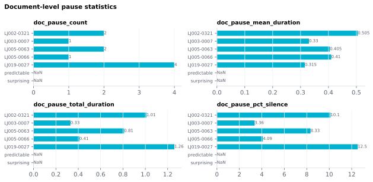

6.2.9Document-level pause statistics
Four document-level summary statistics of silent pauses in the audio.
6.2.9.1What it is
Four document-level summary statistics of silent pauses in the
audio. A "pause" is an inter-word silence (Word_Gap) longer than a
configurable threshold (default 0.25 s; GUI-tunable on the
Document-level features → Prosody card).
| Column | Meaning | Unit |
|---|---|---|
doc_pause_count |
Number of inter-word gaps exceeding the threshold. | integer |
doc_pause_mean_duration |
Mean duration of those pauses. Blank when there are no pauses (a mean of nothing is undefined, not 0 s). | seconds |
doc_pause_total_duration |
Sum of those pauses. | seconds |
doc_pause_pct_silence |
Pause time as a percent of the speech span (first word's onset to last word's end). | percent (0–100) |
The speech span deliberately leaves out silence before the first word and after the last one: that padding depends on how the recording was cut, not on the speaker.
6.2.9.2See it

6.2.9.3In your output
| stimulus_id | doc_pause_count | doc_pause_mean_duration | doc_pause_total_duration | doc_pause_pct_silence |
|---|---|---|---|---|
| LJ002-0321 | 2 | 0.505 | 1.01 | 10.11 |
| LJ003-0007 | 1 | 0.33 | 0.33 | 3.36 |
| LJ005-0063 | 2 | 0.405 | 0.81 | 8.333 |
| LJ005-0066 | 1 | 0.41 | 0.41 | 4.092 |
| LJ019-0027 | 4 | 0.315 | 1.26 | 12.54 |
| predictable | ||||
| surprising |
6.2.9.4MATLAB
% Load the document-level table (one row per stimulus)
T = readtable('document/documents_summary_<timestamp>.csv', 'TextType', 'string');
T.Properties.VariableNames % every column in the file
T(1:10, {'stimulus_id', 'doc_pause_count', 'doc_pause_mean_duration', 'doc_pause_total_duration', 'doc_pause_pct_silence'}) % this feature's columns
% Plot
barh(T.doc_pause_count); yticks(1:height(T)); yticklabels(T.stimulus_id); xlabel('doc_pause_count')
6.2.9.5Configuration
The pause threshold is shared with the document-level Pause
threshold (sec) spinbox in the Prosody card. Default 0.25 s
matches the convention in much of the prosody literature
(Goldman-Eisler 1968), but the right value depends on your
discourse:
- Conversational dialogue: 0.20 – 0.30 s
- Read narrative / audiobook: 0.30 – 0.50 s
- Lecture / formal speech: 0.40 – 0.60 s
The same threshold applies to all four columns — they're not independently tunable.
6.2.9.6In the code
Source: sensi/extractors/prosody.py:compute_doc_prosody. All four columns
come from the MFA-aligned words (rows with an Onset/End), sorted by
onset. The gap between consecutive words is the same quantity as the
word-level Word_Gap column:
gaps = onset[1:] - end[:-1] # consecutive aligned words
pauses = gaps[gaps > threshold_s] # strictly greater than
span = end[last] - onset[first] # speech span
doc_pause_count = len(pauses)
doc_pause_total_duration = sum(pauses)
doc_pause_mean_duration = mean(pauses) if pauses else NaN
doc_pause_pct_silence = 100.0 * doc_pause_total_duration / span
Words that share one MFA interval (e.g. the two halves of a contraction) produce a negative or zero gap, which never counts as a pause.
Before 2026-10-21, doc_pause_pct_silence was emitted as a fraction
(0–1) despite its name, and doc_pause_mean_duration was 0 instead of
blank for a stimulus with no pauses.
These columns need forced alignment; without it the document prosody step does not run and they are left out. The doc-level page's preflight surfaces a warning in that case.
6.2.9.7EEG rationale
Pauses chunk continuous speech into prosodic phrases and clauses — each pause boundary is an event-marker in its own right and elicits the Closure Positive Shift (CPS) (Steinhauer 1999, Pauker 2011). Document-level pause statistics let you:
- Match stimuli on pausing behaviour before running a cross-stimulus contrast — a stimulus full of long pauses has very different envelope structure from one without.
- Predict listener engagement — speech with more / longer pauses is easier to process at low speech rates, an effect documented in the pausing-and-comprehension literature (Goldman-Eisler 1968); ERP signatures of pause-related boundaries appear as the closure-positive shift (Steinhauer 1999, Pauker 2011).
- Distinguish pause types (combined with
articulation_rate): a stimulus with low articulation rate AND many pauses is genuinely slow; one with high articulation rate AND many pauses is fast-but-bursty.
doc_pause_pct_silence is the most-cited single-number summary of
"how much of the speech is silence" — useful for stimulus-level
matching and as a sanity check (if it's 0 %, alignment may have
failed or the speaker never paused longer than the threshold). Because
it is measured over the speech span, long silence at the very start or
end of a file does not inflate it.
6.2.9.8Papers
- Goldman-Eisler 1968 Goldman-Eisler. Psycholinguistics: Experiments in Spontaneous Speech. Academic Press. — foundational study of pause distribution in spontaneous conversation, including the canonical hesitation-pause / juncture-pause distinction.
- Steinhauer 1999 Steinhauer, Alter, Friederici. Brain potentials indicate immediate use of prosodic cues in natural speech processing. Nature Neuroscience 2(2), 191–196. doi:10.1038/5757 — CPS at prosodic boundaries.
- Pauker 2011 Pauker, Itzhak, Baum, Steinhauer. Effects of cooperating and conflicting prosody in spoken English garden path sentences: ERP evidence for the boundary deletion hypothesis. J. Cognitive Neuroscience 23(10), 2731–2751. doi:10.1162/jocn.2011.21610